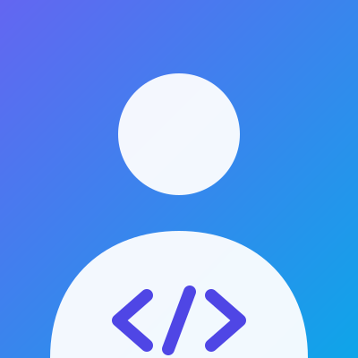

PORTFOLIO
안녕하세요,
LINK입니다.
웹의 기본기를 배우며, 사람이 쓰기 편한 서비스를 만드는 과정을 기록합니다.

저를 소개합니다
HTML로 내용을 나누고, CSS로 배치하고, JavaScript로 동작을 연결합니다.
메뉴 열기, 테마 저장, 입력 오류 안내처럼 사용 중에 만나는 작은 순간까지 살펴봅니다.
기술 스택
-
HTML
시맨틱 태그로 문서 구조 나누기
-
CSS
Flexbox, Grid, 변수, 반응형
-
JavaScript
이벤트, 상태, 비동기 처리
-
Git / GitHub
버전 관리와 GitHub Pages 배포
프로젝트
GitHub API에서 최근 업데이트된 저장소를 가져옵니다.
문의하기
학습용 폼입니다. 입력을 검사만 하고 실제로 전송하지는 않습니다.